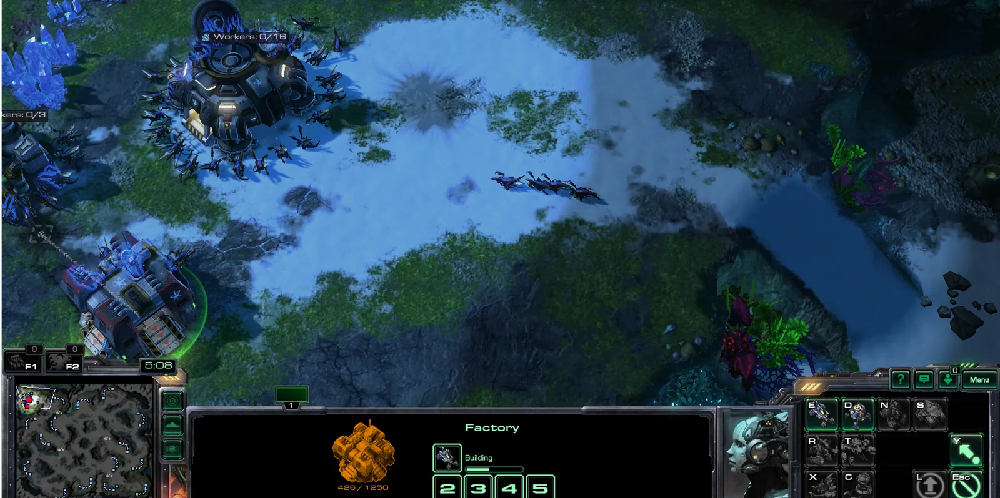

Prompted play modes
Swap Markdown instruction packs to change the rules—from standard aggression to a fortified defense-only siege.
Browse modesOpen-source · Ubuntu · MIT
A StarCraft II sparring arena where humans, scripted Playbot, and LLM coaches meet under repeatable conditions—with live in-game chat and structured match logs.

Match feed activeThe arena
Run the same map and mode across different coaching conditions, then inspect what the agents said, saw, and did.
Swap Markdown instruction packs to change the rules—from standard aggression to a fortified defense-only siege.
Browse modesEvery match produces machine-readable metadata, chat, events, and economy snapshots ready for evaluation or training.
View log schemaHold the bot and scenario constant while rotating the coach, making behavioral differences easier to observe.
See protocolsDeployment sequence
# Clone and prepare the arena git clone https://github.com/EdwinKestler/scplay-grok-bot.git cd scplay-grok-bot ./scripts/setup_venv.sh ./scripts/install_maps.sh # Launch the defense-only scenario ./scripts/play_vs_playbot.sh --mode defense_only
One observable loop
The project connects the game client, bot logic, optional LLM coaching, and a durable evidence trail.
Featured scenario
In defense_only, Playbot fortifies home territory and only counters local threats. The human must push, breach, and finish the base.
Read the full mode promptOpen lab
Fork the project, add a mode, or run the first baseline protocol.